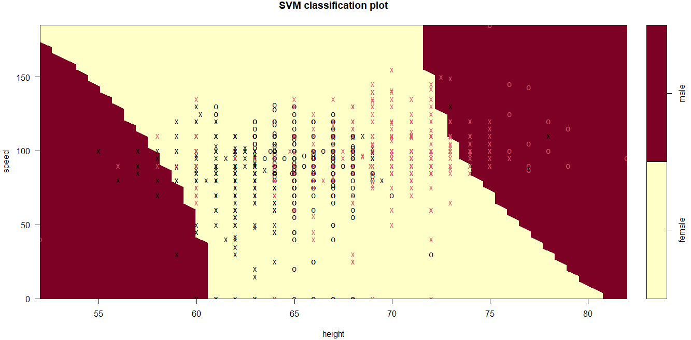

Introducción
El tutorial usará un dataset para ejemplificar el uso de los diferentes kernels (famosos) y utilidad de esta función. Si quieres conocer algunas ideas teóricas de esta técnica SVM, constulta este breve artículo.
Objetivo
Que aprendas las bases sobre la función svm() de la librería e1071. Esta función permite implementar la técnica de clásificación Support Vector Machines en datasets.
Cargar librería
Para poder hacer uso de la función svm(), es primordial cargar la librería e1071, puedes hacerlo en el siguiente espacio de código.
#
library(____)Parámetros de svm()
formula: respuesta ~ explicativasdata: data.framescale: ¿Se escalan los datos? Verdadero (T) o Falso (F)type: “C-classification” por defecto.kernel: tipo de kernel“linear”: \(K(x_i, x_j) =\displaystyle \sum_{l = 1}^p x_{il}x_{jl}\)
“polynomial”: \(K(x_i, x_j) = \bigg( 1 + \displaystyle \sum_{l = 1}^p x_{il}x_{jl}\bigg)^d\)
“radial”: \(K(x_i, x_j) = \exp \bigg\{ -\gamma \displaystyle \sum_{l = 1}^p (x_{il} - x_{jl})^2\bigg\}\)
cost: 1, por defecto. Es la \(C\) del problema de optimización.
Ve más sobre la función en la documentación de R
¿Confirmando estereotipos?
En esta sección consideremos el dataset siguiente:
Forma de los datos
speed_gender_height: Velocidad, género y altura de 1325 estudiantes.
Son 1302 observaciones, la variable respuesta tiene las etiquetas “female” y “male” de la variable categórica \(y =\) gender.
Las variables explicativas son “height” y “speed” de las personas participantes en el estudio.

En el siguiente código puedes explorar de forma visual la forma en que se acomodan las observaciones en el data set popcorn.
plot_info <- ggplot(info, aes(x = speed, y = height, color = gender)) +
geom_point(alpha = ___) +
ggtitle("Personal Information") +
theme_minimal() +
scale_color_manual(values = c("#BD9B17", "#1A1458"))
plot_infoSeparar datos
Para poder comprobar la utilidad de nuestro modelo, es común hacer que el conjuntos de datos se parta en dos (inicialmente…):
trainingset para construir el modelo) y
testset para hacer las predicciones y poner a prueba el poder de predicción del modelo.
En este ejercicio usaremos el dataset info para partir los datos en dos conjuntos.
# 80% para construir el modelo, 20% para "probar su capacidad de predecir"
info[, "train"] <- ifelse(runif(nrow(info)) < .8, 1, 0)
trainset <- info[info$train == 1, ]
testset <- info[info$train == 0, ]
trainColNum <- grep("train", names(info))
trainset <- trainset[, -trainColNum]
testset <- testset[, -trainColNum]Crear modelo
Para implementar la técnica SVM con los diferentes kernels, presentamos los siguientes ejercicios:
Lineal
\[K(x_i, x_j) =\displaystyle \sum_{l = 1}^p x_{il}x_{jl}\] Ajusta un SVM con un kernel lineal a los datos info
svm_model_l <- svm(gender ~ .,
data = trainset,
type = "C-classification",
kernel = "____",
scale = FALSE)Revisemos algunos elementos que nos devuelve el modelo
names(svm_model_l) # ¿Qué nos devuelve el modelo?
svm_model_l$index # ¿Cuáles observaciones son vectores soporte?
svm_model_l$rho # Beta0 (intercepto)Obtengamos la pendiente y ordenada al origen del hiperplano (recta, para las amistades :satisfied:)
# Vector de pesos
w <- t(svm_model_l$coefs) %*% svm_model_l$SV
#Pendiente
slope_l <- -w[1]/w[2]
#Ordenada al origen
intercerpt_l <- svm_model_l$rho / w[2]Hagamos un gráfico de los datos con el hiperplano y los márgenes
plot_info_svm_l <- plot_info +
# resaltamos los vectores soporte
geom_point(data = trainset[svm_model_l$____,],
aes(x = speed, y = height),
color = "#6EA815", size = 2, alpha = .3) +
# añadimos el hiperplano
geom_abline(slope = slope_l,
intercept = ______,
size = 1,
color = "#A91323") +
# con sus lineas paralelas con el margen correspondiente
geom_abline(slope = slope_l,
intercept = intercerpt_l - 1/w[2],
linetype = "dashed",
color = "#A91323") +
geom_abline(slope = slope_l,
intercept = intercerpt_l + 1/w[2],
linetype = "dashed",
color = "#A91323")¿Qué tan bien hizo la clasificación?
pred_test_1 <- predict(svm_model_l, testset)
mean(pred_test_1 == testset$gender) #accuracyPolinomial
\[K(x_i, x_j) = \bigg( 1 + \displaystyle \sum_{l = 1}^p x_{il}x_{jl}\bigg)^d\] Recordemos que existen diversos hiperparámetros, parámetros que nosotros decidimos. Para no hacer una elección al azar, la función tune.svm() nos permite elegir “los mejores” de entre la lista que demos.
Esto lo hace buscando el modelo que mejores aciertos tenga de predicción, o menor error, de entre todas las combinaciones posibles.
tune_out_p <-
tune.svm(
#en vez del data set, y la fórmula, se escriben la respuesta y
#las variables explicativas
x = trainset[, -2], y = trainset[, 2],
type = "C-classification",
kernel = "_____", degree = 2,
#Damos diferentes valores para los parámetros
cost = 10^(-1:1),
gamma = c(0.1, 1)
)
#Obtenemos los "mejores" valores de hiperaprámetros
c <- tune_out_p$best.parameters$cost
gma <- tune_out_p$best.parameters$gammaUna vez hecho lo anterior, podemos construir nuestro modelo
svm_model_p <- svm(gender ~ .,
data = ____,
type = "C-classification",
kernel = "polynomial", degree = ___,
cost = c,
gamma = gma)
# ¿Cuántas de las observaciones son vectores soporte?
length(svm_model_p$index) Por último veamos la exactitud de predicción del modelo (accuracy) así como el plot que nos brinda e1071 por defecto.
pred_test_p <- predict(svm_model_p, testset)
mean(pred_test_p == testset$gender) #accuracy
svm_p_plot <- plot(svm_model_p, trainset)Radial
\[K(x_i, x_j) = \exp \bigg\{ -\gamma \displaystyle \sum_{l = 1}^p (x_{il} - x_{jl})^2\bigg\}\] Como en el ejerciicio anterior, he buscado los “mejores” hiperparámetros. Ahora solo te toca obtener el modelo, ver su exactitud de predicción y graficar.
Considera que en este ejercicio el objetivo es que uses un kernel radial.
svm_model_r <- svm(____ ~ .,
data = trainset,
type = "C-classification",
kernel = "____",
cost = tune_out_r$best.parameters$___,
gamma = tune_out_r$____$gamma)
summary(____)
pred_test_r <- predict(svm_model_r, ____)
mean(_____ == testset$gender) #accuracy
plot(svm_model_r, _____)svm_model_r <- svm(gender ~ .,
data = trainset,
type = "C-classification",
kernel = "radial",
cost = tune_out_r$best.parameters$cost,
gamma = tune_out_r$best.parameters$gamma)
summary(svm_model_r)
pred_test_r <- predict(svm_model_r, testset)
mean(pred_test_r == testset$gender) #accuracy
plot(svm_model_r, trainset)¿Qué modelo es mejor?
Como sabemos, la respuesta no existe a una pregunta que carece de sentido. El problema es que bajo diferentes datasets, los modelos pueden variar en la exactitud de su clasificación.
Lo que es cierto es que para este dataset en particular obtuvimos:
Lineal 82.29% accuracy

Polinomial 66.66% accuracy

Radial 81.94% accuracy

Debemos considerar que los modelos estuvieron sujetos tanto a la partición que se hizo para crear el modelo (trainset/testset), como a los hiperparámetros que nosotros enlistados.